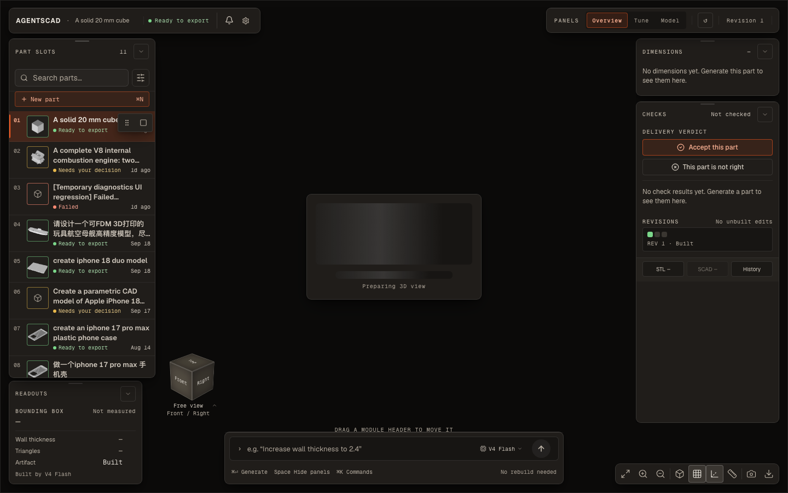
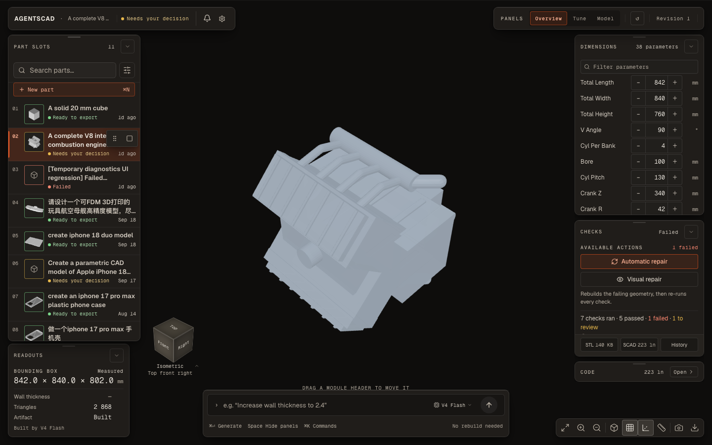
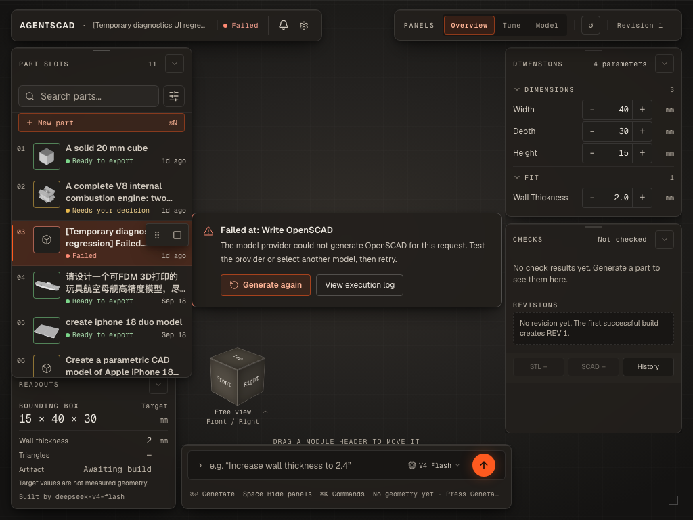
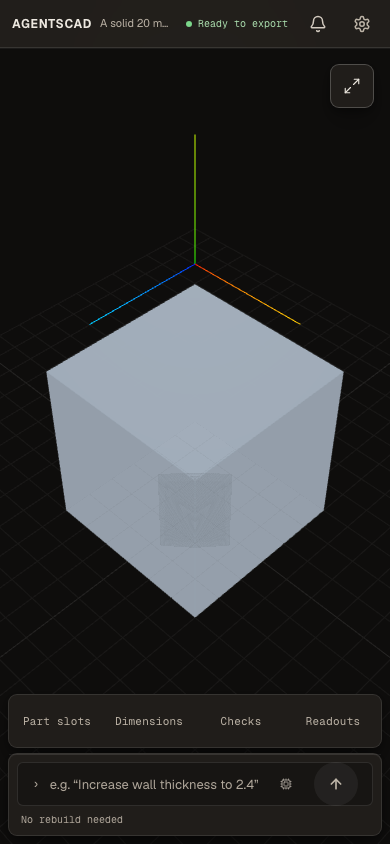

第一轮 17 项问题修复之后，重新以 DESIGN.md 为基准实测当前状态。本轮重点不在"做得糙不糙"，而在界面说的是不是真的——同一块屏幕上，两个模块对同一件零件给出相反的答案。
工艺层面已经合格，真实性问题没有解决。上一轮的硬伤全部守住了：30 个组合零裁切、零对比度失败、正文五档字号、交付态零实心强调块。右列不再溢出，移动端能真实渲染几何，浅色主题的语义色也站住了。
但本轮量到的问题换了一个性质：不是画得不好，是画错了。打开一件已经交付的零件，尺寸模块立刻写「1 parameter changed · Rebuild required」并给一个 Undo，而同一屏底部的 composer 写「No rebuild needed」；点选后的 1–2.5 秒里，尺寸和检验两个模块都说「先生成一次」，而列表和 composer 说「Ready to export」。界面在用户还没做任何事的时候，先撒了两个谎。
另外，上一轮的颜色纪律只扫了 hex 字面量，漏掉了 Tailwind 调色板类——107 处 / 36 种，含明令禁止的 cyan。本轮已用运行时探针证实这些工具类确实会渲染。
为了让结论可复核，先把取证方式写清楚。
/api/jobs?summary=true 返回的字段与详情接口的字段差集。| 维度 | 实测 | 判定 |
|---|---|---|
| 模块裁切 | clipped: none —— 30/30 组合 | 守住 |
| 对比度 | 0 fail，每格逐项测 94–175 个文本节点 | 守住 |
| 强调色预算 | 交付 / 待决策态 solid signal: 0；失败态 1 处（见 N9） | 基本守住 |
| 字号阶梯 | 收敛为 10 / 11 / 12 / 13 / 16 五档 | 守住 |
| 右列布局 | 三个模块在 1024/1280/1440 下均无溢出 | 守住 |
| 移动端几何 | 390×844 下 20mm 立方体真实渲染，非占位图 | 守住 |
| 浅色主题 | 语义色与网格在 15 个浅色组合里无对比度失败 | 守住 |
上一轮最危险的两个根因——flow 模块的 shrink-0 与 globals.css 里那条把 8–9.5px 静默改写成 10px 的 unlayered 规则——确实被拔掉了。30 个组合零裁切不是运气，是布局模型改对了。
DimensionsModule.tsx:92-99 · MainWorkspace.tsx:242-251 · 违反 §18 / §22
打开一件已经交付的零件，不做任何操作，屏幕上同时出现两句互相否定的话：
两句都停留在屏幕上，直到用户动手。左边告诉用户"你改了一个参数，必须重建"，右边告诉用户"不需要重建"。同一件零件，两个模块，两个答案。
changed 用 values[p.key]（来自 job.parameterValues，即已构建值）去比 p.value（schema 里声明的默认值）；composer 的 changes 用 paramDraft（草稿）去比 p.value，而 paramDraft 初始为 null，于是永远为空。edge_length 已构建 = 30、schema = 20。而这正是默认选中的那一件。draft vs job.parameterValues。尺寸模块应接收 baseline 而不是自己从 p.value 反推；p.value 只用于"新建设计时填什么"。useWorkspaceState（summary 列表）· DimensionsModule.tsx:67-73 · ChecksModule · 违反 §18
点选一件零件的瞬间，列表和 composer 已经知道它有几何，但尺寸与检验两个模块拿不到 schema 和检验结果，于是各自打印了自己的空状态句子。

GET /api/jobs?limit=50&summary=true 的返回字段里没有 parameterSchema / parameterValues / validationResults，但有 stlPath / pngPath / state。列表因此能画对状态徽章，模块却只能画空态。pending 与 empty——没到就画 dash / 骨架，不要给句子。句子一旦给出就必须为真。ReadoutModule.tsx:188-190 · ModelPicker.tsx:60-68 · 违反 §26.8
读数模块底部有一行 provenance。正常零件显示 Built by V4 Flash；一旦该作业的模型已经不在当前配置表里，就原样吐出模型 id：Built by deepseek-v4-flash。


validation-panel / chat-panel / research-panel / timeline-panel / job-version-history / notes-panel / job-dependencies / ui/toast / ui/slider · 违反 §11
上一轮的颜色纪律只查了 #RRGGBB 字面量，并为此加了一条 ESLint 规则。但 text-emerald-400 这类类名不是 hex，规则抓不到。静态统计结果：
| 文件 | 处数 | 高频变体 |
|---|---|---|
| validation-panel.tsx | 50 | emerald / rose / amber |
| chat-panel.tsx | 11 | emerald / amber |
| research-panel.tsx | 10 | sky / violet |
| timeline-panel.tsx | 10 | emerald / rose |
| job-version-history.tsx | 10 | emerald / amber |
| notes-panel.tsx | 7 | amber |
| job-dependencies.tsx | 5 | sky |
| ui/toast.tsx · ui/slider.tsx | 4 | rose / emerald |
合计 107 处 / 36 种；高频：text-emerald-400 13、text-amber-400 12、text-rose-400 11；含 cyan-400（§11 明令禁止） | ||
关键问题是这些类到底会不会生效。在真实页面里注入带目标类名的元素，读计算样式：
结论：Tailwind 确实生成了这些工具类，也确实没有被全局覆盖。任何带着它们的元素都会渲染成调色板原色，而不是 --shell-* 令牌。
可达性是成立的：validation-panel / job-dependencies / research-panel / chat-panel 由 InspectorPanel 挂载，job-version-history / timeline-panel / notes-panel 由 history-panel 挂载。
但我按可达路径打开了 Code / History / Description 三个页签后，DOM 里只捞到 1 个带 cyan-400 的元素，且它的计算色已被覆盖成 shell 文本色——死类。其余 7 个面板本次没有渲染出来，所以「107 处全部可见」未获证实；已证实的是「工具类本身有效」+「静态确有 107 处」。这条按 P1 记，但请用第 7 节的脚本逐面板复核后再定修复量。
var(--shell-ok) / --shell-warn / --shell-fail 系列；并把 ESLint 的 no-restricted-syntax 从"禁 hex"扩展到"禁 Tailwind 调色板类名"。ViewerPanel.tsx:16-26 · three-d-viewer.tsx:990-1000 · 违反 §4
点选零件后，画布中央只有一个骨架框和一行 Preparing 3D view。实测冷缓存下这段空窗持续 6.5 秒，热缓存 1.0–2.5 秒。
而这件作业的 pngPath 是 /artifacts/<id>/preview.png，直链 200，图就在磁盘上。DESIGN.md §4 要求"失败时展示最后一次已知渲染"，加载时更该先给一张静帧：用户看到的应该是"零件正在出现"，而不是"系统正在准备某个东西"。
preview.png 作为 canvas 的背景层先铺上，canvas ready 后淡出。骨架只用于确实没有静帧的作业。MainWorkspace 窄屏页签行 · 违反 §20 / §21
390×844 下四个页签（Part slots / Dimensions / Checks / Readouts）在视觉上完全一致。抽查两枚的计算样式：
既没有视觉标记，也没有可访问性标记。用户点了"Dimensions"之后，无法确认自己现在在哪个 sheet 里——只能靠下面的内容猜。

ReadoutModule · MainWorkspace · 违反 §24（正文不低于 11px）
本轮逐字采样到的 10px 文本：
需要区分对待：chrome 标签 10px 是设计选择，正文句子 10px 是违规。上一轮把字号收敛到五档是对的，但 10px 这一档被用到了句子身上。
Target values are not measured geometry. P2ReadoutModule 底部 · 违反 §10 / §26.8
"target values" 和 "measured geometry" 是引擎词。用户心里只有两样东西：我填的尺寸 和 实际做出来的东西。这句话想说的其实是"下面这组包围盒是按你填的参数算的，不是从模型量的"，但现在的写法要求用户先懂管线。
composer 发送键 vs JobFailureNotice · 违反 §11
失败态实拍里，屏幕最响的元素是 composer 右下角那颗实心 signal 圆键（34×34，实测面积 1156px²）；而这个状态真正要求的动作——失败卡上的「Generate again」——只有 1px 描边。同一颗发送键在交付态实测为 rgba(255,255,255,0.055)，即 6% 白。
也就是说：同一个控件在两种状态下强调级别不同，而失败态下最响的那个不是恢复动作。用户的视线会被拉到"再输入一句话"，而不是"重试"。§11 的强调色预算本意就是防止这件事。
three-d-viewer.tsx:715-719 · 违反 §11
AxesHelper 固定在世界坐标 (-50, 0.1, -50)。在小视口里它落在模型正上方，读起来像三根彩色的线飘在空中——没有地面、没有原点参照，用户第一反应是"渲染出错了"。
另外它用的是红/绿/蓝三原色，属于"任意装饰色"，和 §11 的颜色预算直接冲突。轴线要么绑到模型的包围盒角点并随网格一起显示/隐藏，要么去掉。
失败态 1024 / 1280 / 1440
三个宽度下都测得 slots ↔ readout 重叠 3511px²（约 59px 高）。没有遮住任何一行内容，但零件栏的下边框被切断，读起来像布局没算完。
MainWorkspace 品牌板 · §3.4 精神
1440 下显示 A complete V8 …，390 下显示 A solid 20 m…。零件名是这一屏的"身份"，被截断且没有 hover 全文，用户就分不清自己看的是哪一件。§3.4 的原话是"a cutoff control is a bug"——截断的标识文本同理。
证据是那张 2.5 秒时的截图：画布中央只有骨架和 "Preparing 3D view"，而列表说 "Ready to export"。看起来像永久卡死。
实际是我的脚本只等了 2.5 秒就按了快门。用 250ms 粒度的探针重跑后：prep 在 6.5 秒（冷）/ 1.0–2.5 秒（热）后变为 false，canvas 正常挂载，几何正常渲染（见 390 截图里的立方体）。没有卡死。
这条已改写为 N5：问题真实存在，但性质是"空窗期太长且不用静帧"，不是"死锁"。写进这里是因为审查报告的价值取决于它有多可信——一条夸大的结论会毁掉另外十一条。
| 维度 | 分 | 依据 |
|---|---|---|
| 布局与裁切 | 4.5 | 30/30 零裁切，右列分配正确，浮板位置稳定 |
| 排版与字号 | 4.0 | 五档收敛成功；10px 仍用在正文句子上（N7） |
| 颜色纪律 | 2.8 | 107 处原色类实测生效，含 cyan（N4）；失败态强调倒置（N9） |
| 状态真实性 | 2.2 | 陈旧判定自相矛盾（N1）；加载期假空态（N2）；引擎名泄漏（N3） |
| 文案 | 3.0 | 检验摘要与修订段已经好读；仍残留引擎语汇（N8） |
| 响应式 | 3.5 | 移动端几何真实渲染；页签无激活态（N6）；品牌名截断（N12） |
| 性能观感 | 3.0 | 6.5s 冷启动空窗，静帧未利用（N5） |
| 可访问性 | 4.0 | 对比度 0 失败；移动页签缺 aria 状态（N6） |
| 总分 | 3.8 | 比第一轮 2.7 提升 1.1；扣分全部集中在"界面说的是不是真的" |
baseline = job.parameterValues，draft 与它比。尺寸模块删掉自己的 changed 计算，改吃 hasDraftChanges + changes。修完断言：打开任意已交付零件，尺寸模块与 composer 的陈旧语句必须同时为空。parameterSchema / parameterValues / validationResults；或模块引入 pending 态。修完断言：点选后 0ms 起，屏幕上不得出现"Generate this part / Generate a part"。engineLabel 去掉裸 id 回退；读数模块那一行改成不依赖模型的固定文案或不渲染。修完断言：任何页面上不得匹配到 deepseek-|gpt-|claude- 这类 id 形态。preview.png 作 canvas 背景层。修完断言：点选后 300ms 内画布区域必须有非空像素。下面每一条都能写成脚本，不需要人眼判断。
| 断言 | 方法 |
|---|---|
| 陈旧只有一个写者 | 选中任意已交付零件，[data-module="params"] 内不得出现 Rebuild required，除非 composer 尾部同时出现同一句 |
| 加载期不撒谎 | 点选后 0–3000ms 每 100ms 采样，页面文本不得出现 Generate this part / Generate a part to see |
| 无引擎名 | document.body.innerText 不得匹配 /(deepseek|gpt|claude|gemini|llama)[-_ ]?[0-9a-z.]*/i |
| 无调色板原色 | 遍历所有元素 className，不得匹配 /(emerald|rose|amber|cyan|sky|violet|purple|blue|green|red|yellow|orange|teal|indigo|fuchsia|pink|lime)-\d{2,3}/；逐面板打开后再跑一遍 |
| 首帧有内容 | 点选后 300ms 截图，画布区域非背景色像素占比 > 5% |
| 移动页签有激活态 | 390 宽下，四个 sheet 页签的 computedStyle 必须至少有一项不同，且被选中者带 aria-selected="true" |
| 正文不小于 11px | 遍历叶子文本节点，凡长度 > 12 字符者 fontSize ≥ 11 |
| 零裁切 | 已有断言继续跑：scrollHeight - clientHeight ≤ 2 且 overflow: hidden 的元素数为 0 |
检验模块的摘要行——"7 checks ran · 5 passed · 1 failed · 1 to review" 一句话把四件事说清楚了，而且计数只有一个来源（summarizeChecks）。这是全屏最诚实的一块。
读数模块的层级——包络尺寸 16px 作主角，壁厚 / 三角面 / 制品状态依次退后，符合 §6"读数是指针，不是表格"。
参数行的单位列——计数量（Cyl per Bank）不给单位，长度量给 mm，这个区分是对的，而且做在 schema 层（isCountParameter）而不是散在组件里。
移动端能真的看到零件——390 宽下渲染的是几何本体而不是占位图，这件事比它看起来难。